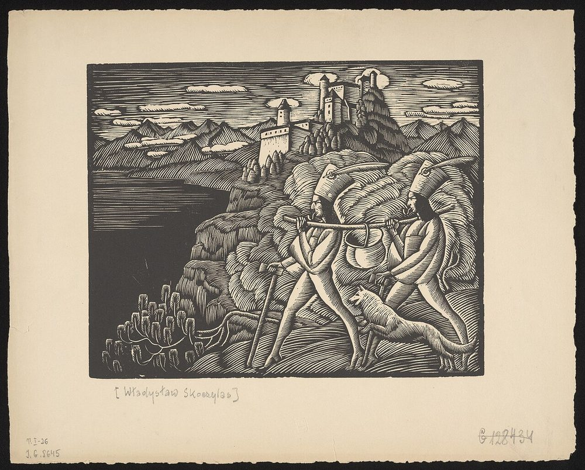

Dobra y Jurków · 1735 · historia nueva sacada de las fuentes y de la tradición oral de los vecinos
La última juerga del bandolero
Józef Baczyński, de Skawica, fue uno de los bandoleros más famosos de los Beskides. Su andadura terminó a finales del otoño de 1735, en una fiesta en las tierras de Dobra. Sobre el lugar exacto discrepan los estudios y la memoria de los vecinos.
Traducido del original polaco con la ayuda de Claude. Las citas de los libros las doy en el original, con su traducción.
Józef Baczyński, llamado Skawicki, era de Skawica, al pie de la Babia Góra. Nació en una familia pobre de campesinos sin tierra y de joven sirvió en casa de campesinos más ricos. En abril de 1732 asaltó con sus compinches a un sastre rico. Después se unió a la banda de los hermanos Giertuga y en 1733 asaltaron juntos la cervecería de Dobczyce. Cuando los Giertuga fueron capturados, Baczyński se convirtió en «harnaś», es decir, en jefe de la banda. Sus hombres asaltaban casas señoriales en Jaszczurowa, Śleszowice, Tłuczań y Łętownia.
Según los estudios, la banda tenía escondites en las laderas del Mogielica, en Ochotnica y junto a Biała Woda. El Mogielica es el monte a cuyo pie se encuentran Półrzeczki y Chyszówki, así que los bandoleros conocían bien nuestra tierra.
La última fiesta
A finales del otoño de 1735, los bandoleros vinieron a nuestra tierra. Los relatos de lo que ocurrió entonces difieren en los detalles. Según uno, raptaron a un violinista, lo llevaron a la taberna de Dobra y organizaron una juerga que interrumpió la irrupción de los «harnicy». Según otro, se llevaron a un músico de la casa de un tal Stoczek, en Kasinka, llegaron a una choza del caserío de Wilczyska, en Dobra, y tras un copioso festín se durmieron. Por la mañana aparecieron de improviso los «harnicy».
«Harnicy» era el nombre de las tropas que combatían a los bandoleros. Varios compinches huyeron. Baczyński fue apresado con uno, y según otros, con cuatro compañeros.

Según Wikipedia, los «harnicy» de la señora Wielopolska, esposa del starosta (gobernador real del distrito), llevaron a los presos a su castillo de Sucha. Sucha estaba entonces vinculada a la hacienda de Dobra: en 1725, la señora de Dobra, Anna Małachowska, firmó «en el castillo de Sucha» una orden para el alcalde de Dobra. Otros estudios escriben que los bandoleros fueron encerrados en el castillo de Cracovia. Allí el tribunal del castillo condenó a Baczyński a morir decapitado, y a principios de 1736 se ejecutó la sentencia.
Lo que recuerda Jurków
En Jurków ha sobrevivido un recuerdo propio de este suceso. Según los relatos de los vecinos, la taberna en la que se apresó al «harnaś» estaba en Szerszenie, en Jurków Dolny, a unos 50 metros de la actual capilla de 1826. Algunos dicen incluso que la capilla se construyó en el lugar de la taberna, pero otros lo niegan.
La capilla está frente a la casa n.º 5, la granja de mis antepasados, los Podgórni. Ellos mismos llegaron a Jurków unos años después de la captura del «harnaś», y los números de las casas no se asignaron hasta la segunda mitad del siglo XVIII. Pero Jurków pertenecía a la misma hacienda que Dobra, así que «la taberna en la hacienda de Dobra» pudo estar también aquí.

En una de las familias de Szerszenie se ha conservado el relato de que los «harnicy» ordenaron a un antepasado suyo que pusiera un carro con tiro y llevara al bandolero a Sucha. Viajaron toda la noche. Este recuerdo familiar coincide con la versión del castillo de Sucha.
En Jurków también se dice que la taberna la llevaba un judío. En la década de 1730 había, efectivamente, arrendatarios judíos en la hacienda de Dobra. El administrador de la casa señorial se justificaba en 1739 por una de las peleas: «Corrí a toda prisa a la cervecería para avisar a los judíos». De los taberneros de aquellos años conocemos por su nombre a Szymon Wrona, y en 1731 unos testigos mencionaban al tabernero Węgrzyn, de Wilczyce. Ninguna de las fuentes consultadas dice quién llevaba la taberna donde se apresó a Baczyński.
Una huella en los documentos
La única huella segura de este suceso en los documentos de nuestra hacienda es de 1739. Entre las 41 acusaciones contra el administrador de la hacienda de Dobra está también la de haberse apropiado de parte de los objetos robados recuperados «tras la captura del harnaś Baczyński». Lo cuenta la historia «Cuarenta y un cargos».
Los libros parroquiales guardan silencio sobre el «harnaś». Los libros de defunciones no empiezan hasta 1779, y en el libro de bautismos de aquellos años no aparece en Jurków ni un tabernero ni ninguno de los «harnicy». En el mapa catastral de 1845 no se marcó ninguna taberna en Jurków, pero para entonces podía hacer mucho que había desaparecido.
Grado de certeza
- SeguroQue en 1739 el botín recuperado tras la captura del «harnaś» fue una de las acusaciones contra el administrador de la hacienda de Dobra.
- ProbableLa captura en la hacienda de Dobra a finales del otoño de 1735 y la ejecución en Cracovia a principios de 1736. Los estudios lo dan de forma coincidente, y la acusación de 1739 vincula el caso con Dobra.
- PosibleQue la taberna estaba en Szerszenie, en Jurków, a unos 50 metros de la capilla, y que un vecino de Szerszenie llevó al bandolero a Sucha. Son relatos de los vecinos. También que «Wilczyska» sea la actual Wilczyce o el antiguo nombre de un campo.
- Por comprobarSi la capilla está en el lugar de la taberna. Si era una taberna o una choza, y cuántos bandoleros fueron apresados.
Lo que no sabemos
- Dónde estaba exactamente la taberna y quién la llevaba.
- Qué declaró Baczyński ante el tribunal sobre sus últimos días en libertad. Sus declaraciones las publicó Stanisław Szczotka, en 1936 en la revista «Lud» (El Pueblo) y en 1952 en «Materiały do dziejów zbójnictwa góralskiego» (Materiales para la historia del bandolerismo montañés). Todavía no se han podido consultar esas ediciones. Pueden dar el nombre del pueblo y del lugar.
Fuentes
- E. Wojtusiak, «Saskie czasy w karpackiej posiadłości Małachowskich» (La época sajona en la propiedad carpática de los Małachowski), Nasza Przeszłość 60 (1983), pp. 208 y 221–222, academicon.pl.
- Wikipedia, entrada «Józef Baczyński»; se basa en los trabajos de S. Szczotka, «Żywot zbójnicki Józefa Baczyńskiego zwanego Skawickim» (La vida de bandolero de Józef Baczyński, llamado Skawicki), Lud 34 (1936), y de Z. Bubak, «Józef Baczyński, zbójnik beskidzki» (Józef Baczyński, bandolero de los Beskides), Wierchy 29 (1960).
- M. Jakubiak, «Harnaś nad harnasiami, czyli zbójowanie Józka Baczyńskiego» (El jefe de los jefes, o las correrías de Józek Baczyński), ToHistoria.pl (2022); K. Kufel, «Opowieści zbójnickie – hetman Skawicki» (Relatos de bandoleros: el hetman Skawicki), bielskirynek.pl (2021); M. Długopolski, «Szlachetni bohaterowie czy zwykli rabusie?» (¿Nobles héroes o simples ladrones?), VisitMałopolska.
- Relatos de los vecinos de Jurków (2026). La capilla de 1826: mi libro «Ród Podgórnich z Jurkowa» (El linaje Podgórni de Jurków, 2026).